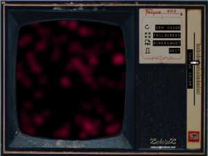

Home > Foliorum
Foliorum
Foliorum is used to communicate with spirits and for fortune telling.
- Very easy to use
- Can be used with a Tasseography dictionary ("tea leaf reading")
- Free (licensed as freeware)
- Windows 10

Please read the manual for detailed information, see below:
Downloads and manual:
Installation instructions:
Download
foliorum.zip - unzip - and run
Foliorum.exe